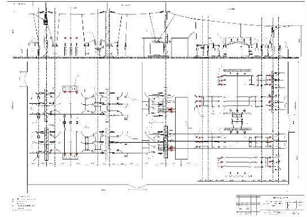
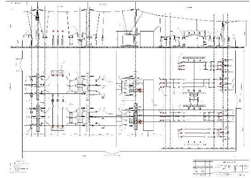

Сигнализатор напряжения стационарный “Пульс-Н”

Сигнализаторы напряжения стационарные (далее - СНС) «Пульс-Н» предназначены для предупреждения персонала о наличии напряжения на проводах воздушных линий электропередачи (ВЛ) напряжением 6-35 кВ пульсирующими световыми сигналами. Они способны питаться энергией электрического поля воздушных ЛЭП напряжением 6 кВ и выше и, поэтому им не нужны элементы питания.
Отсутствие сменных элементов питания, а также использование материалов и деталей, способных длительное время функционировать в широком температурном диапазоне (от –45 до +60 С), позволяет устанавливать их непосредственно на токоведущие части на многолетний срок. Конструкция неразборная, пыле- и влагозащищенная (IP 54).
При наличии напряжения сигнализаторы «Пульс-Н» формируют импульсные световые сигналы. Яркость сигналов СНС постоянна, а их периодичность зависит как от напряжения ВЛ, так и от расстояний до других проводов и заземленных частей электроустановки. СНС «Пульс-Н» не требуют ни настройки при монтаже, ни обслуживания во время эксплуатации. Сигнализаторы обеспечивают надежное распознавание пульсирующего светового сигнала о наличии напряжения. В СНС «Пульс-Н» применена система линз и затенитель.
Порядок применения и характеристики сигнализатора "Пульс-Н" смотрите в Каталоге продукции В форме Запрос возможно уточнить цену, сроки изготовления, запросить коммерческое предложение, документы или задать вопрос.
ЗапросВыпускаются два типа стационарных сигнализаторов
СНС «Пульс-Н» для наружной установки на провода ЛЭП (например, между разъединителем КТП). СНС «Пульс-Н» разработан для установки непосредственно на провода ВЛ или в местах их крепления к проходным изоляторам трансформаторных подстанций.
СНС «Пульс-В» для внутренней установки на токоведущие шины КРУ.
Рекомендуемые места установки СНС «Пульс-Н» 1. На подстанции: - со стороны питающей ВЛ (спуски на линейный разъединитель со стороны ВЛ); - на шинные мосты; - на отходящие присоединения (шлейфы отходящих линий от проходных изоляторов, расположенных на крыше КРУН (КРН)). 2. На трансформаторной подстанции ТП 6-10/0,4 кВ – со стороны линейного коммутационного аппарата. Рекомендуемые места размещения СНС «Пульс», отмеченные красными точками, в ОРУ 35/110 кВ и на ТП 6-10/0,4 кВ приведены на схемах
Рекомендуемые места размещения СНС «Пульс», указанные красными точками, в ОРУ 35/110 кВ и места установки СНС на плане расположения оборудования и однолинейной схеме первичной коммутации ОРУ-110-35 приведены на фото
 

Достоинства
- Срок службы – не менее 25 лет.
- Простое крепление к токоведущим частям
- Питание энергией емкостных токов утечки
- Не требуют настройки, технического обслуживания (только внешний осмотр)
- Обеспечивают надежное распознавание пульсирующего светового сигнала о наличии напряжения

Сертификация и гарантия

Изделие сертифицировано
Разработан и изготавливается Научно-производственным центром
"Электробезопасность", г. Киров.
Поставка и организация технического обслуживания осуществляется ООО "Электробезопасность-Вятка".
Гарантийный срок эксплуатации – 3 года со дня отгрузки с предприятия-изготовителя.